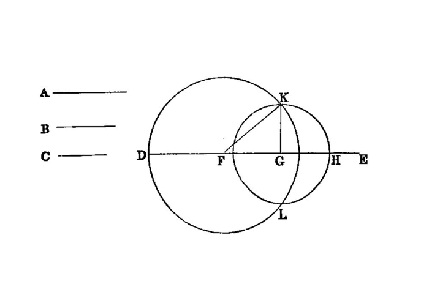

construct a triangle from three segments

{kind=link}
Let the three given straight lines be A, B, C, and of these let two taken together in any manner be greater than the remaining one, namely A, B greater than C,
A, C greater than B,
and B, C greater than A; thus it is required to construct a triangle out of straight lines equal to A, B, C.
Let there be set out a straight line DE, terminated at D but of infinite length in the direction of E, and let DF be made equal to A, FG equal to B, and GH equal to C. [I.3]
With centre F and distance FD let the circle DKL be described; again, with centre G and distance GH let the circle KLH be described; and let KF, KG be joined;
I say that the triangle KFG has been constructed out of three straight lines equal to A, B, C.
For, since the point F is the centre of the circle DKL,
FD is equal to FK.
But FD is equal to A;
therefore KF is also equal to A.
Again, since the point G is the centre of the circle LKH,
GH is equal to GK.
But GH is equal to C;
therefore KG is also equal to C. And FG is also equal to B;
therefore the three straight lines KF, FG, GK are equal to the three straight lines A, B, C.
Therefore out of the three straight lines KF, FG, GK, which are equal to the three given straight lines A, B, C, the triangle KFG has been constructed.
references
[I.3]: /elem.1.3 “Book 1 - Proposition 3” [I.20]: /elem.1.20 “Book 1 - Proposition 20”